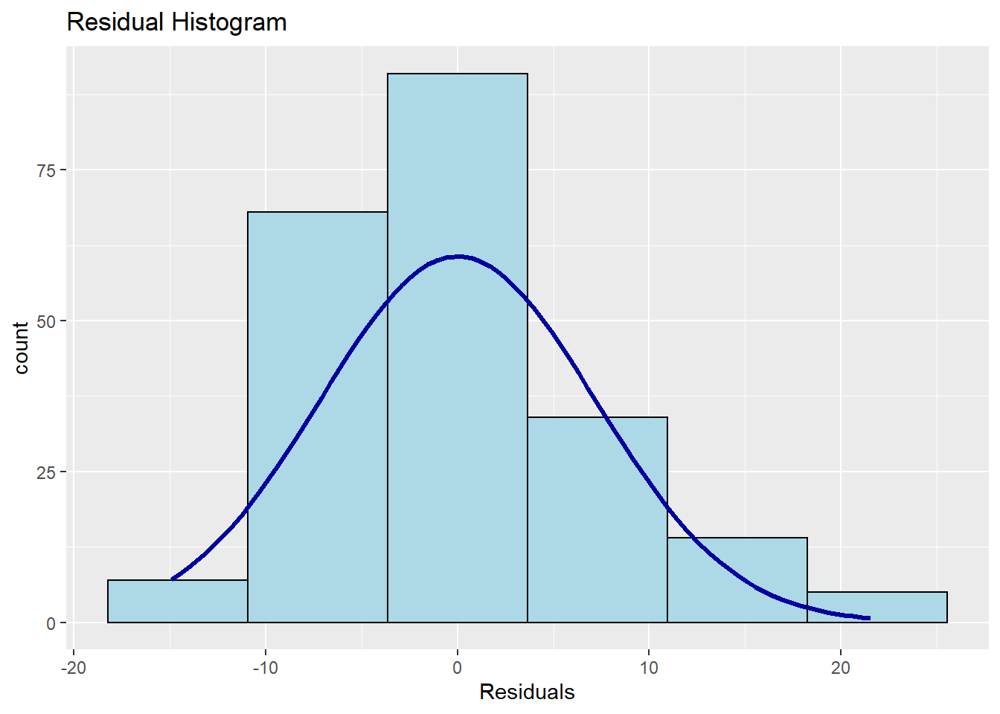
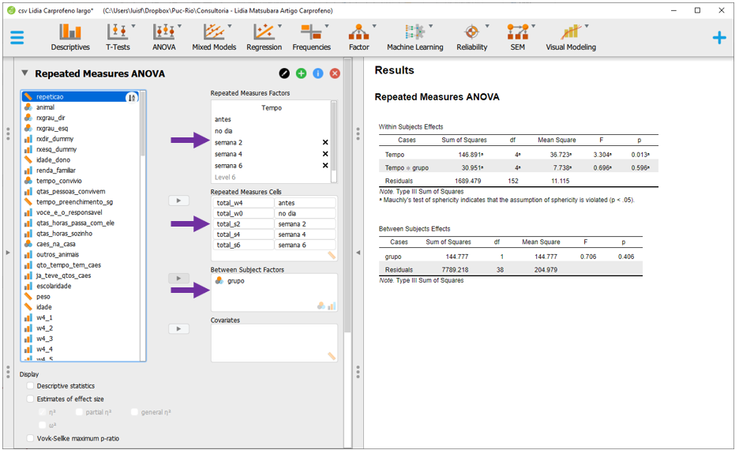
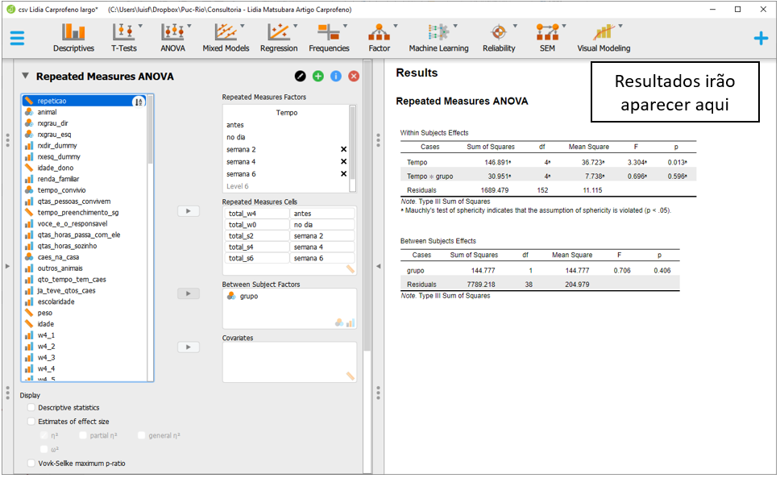
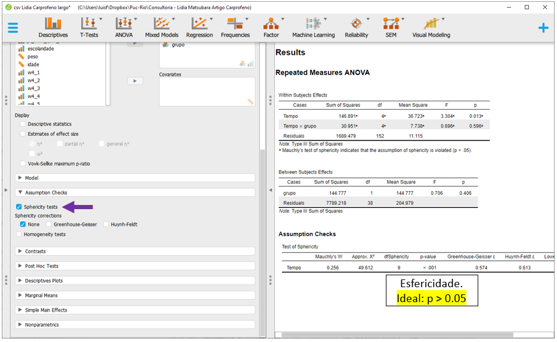
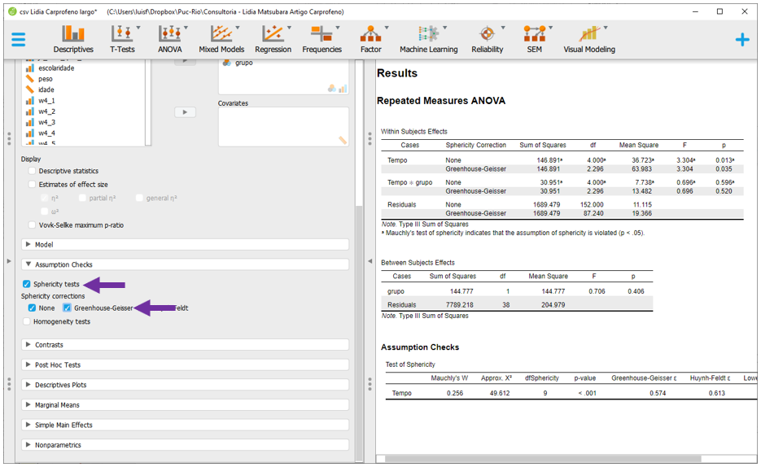
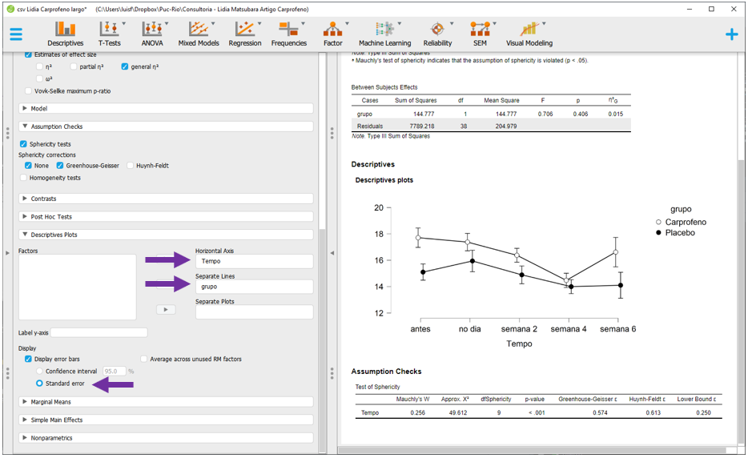

Cap. 13 ANOVA de medidas repetidas
Objetivos do capítulo
1. Apresentar a ANOVA de Medidas Repetidas
2. Realizar passo-a-passo a modelagem analítica
3. Verificar os pressupostos e implementar as correções sugeridas
4. Escrever os resultados
A ANOVA de medidas repetidas é um teste estatístico para a análise de dados longitudinais pareados. Isto significa que o mesmo conjunto de participantes foi acompanhado e avaliado no decorrer do tempo. Esta técnica pode ser entendida como uma expansão da ANOVA ou um caso especial do Modelo Linear de Efeitos Mistos (LMM). Os pressupostos deste teste são próximos aos discutidos em outros testes inferenciais:
(i) Os dados são aleatórios e representativos da população
(ii) A variável dependente é contínua
(iii) Os resíduos do modelo são normalmente distribuídos
(iv) Há esfericidade dos grupos
13.1 Pesquisa
A base desta pesquisa está disponível em formato R (Rdata) e em CSV, que é lido pelo JASP. Clique na opção desejada.
Base R: R - Base Lidia Carprofeno
Base JASP: Base CSV - Lidia Carprofeno largo
A esse momento, vamos ter como referência de análise a pesquisa intitulada “Avaliação psicométrica em português do indicador de dor crônica de Helsinki em cães com sinais crônicos de osteoartrite”, que tem como primeira autora Lídia Matsubara e eu sou coautor. Essa pesquisa foi publicada no “Arquivo Brasileiro de Medicina Veterinária e Zootecnia” em 2019 e objetivou tanto verificar o efeito do medicamento Carprofeno em sintomas relacionados à dor crônica, como apresentar estudos psicométricos de uma nova medida clínica.
Nessa pesquisa, utilizamos um delineamento experimental. No início, todos os participantes foram avaliados em relação a características clínicas da dor crônica e, em seguida, alocados em dois grupos independentes e de maneira aleatória. Os grupos foram chamados de “grupo experimental” e “grupo controle.” Os participantes do grupo experimental receberam o medicamento específico, enquanto os participantes do grupo controle receberam um placebo, que é uma substância que não possui o princípio ativo do medicamento. Nem os participantes, nem os profissionais sabiam quem estava em cada grupo.
A cada duas semanas, durante o tempo de 6 semanas, todos os participantes foram acompanhados e diferentes medições ocorriam para verificar o efeito do medicamento na dor. Para verificar o impacto da retirada do medicamentos, na quarta semana, tanto o medicamento como o placebo foram retirados dos participantes, que foram novamente medidos ao fim da pesquisa, na sexta semana. A imagem a seguir apresenta este processo:

Repare que esse tipo de delineamento contou com três elementos importantes em pesquisas experimentais, que são grupos aleatórios, com a presença de uma condição placebo e duplo-cego.
13.2 Execução no R
A primeira etapa nesta análise será a consolidação da base de dados. No vetor dados, há todas as variáveis utilizadas na pesquisa em formato largo (wide). Apesar de ser possível trabalhar dessa maneira no R, o formato longo é o mais tipicamente encontrado para análises longitudinais e, por isso, será implementado a seguir. Um novo vetor será chamado de tratamento e irá armazenar os mesmos dados originais, só que agrupados neste novo formato.
tratamento <- dados %>%
mutate(id = row_number()) %>%
select(id, grupo_dummy,starts_with("total_")) %>%
pivot_longer(-c(id,grupo_dummy),
names_to = "tempo",
values_to= "resultado") %>%
rename(grupo = grupo_dummy) %>%
filter(grupo < 3) %>%
mutate(grupo = factor(
if_else(grupo == 1, "Experimental", "Placebo"))) %>%
mutate(tempo = factor(case_when(
tempo == "total_w4" ~ "antes",
tempo == "total_w0" ~ "no_dia",
tempo == "total_s2" ~ "semana_2",
tempo == "total_s4" ~ "semana_4",
tempo == "total_s6" ~ "semana_6",
)))As variáveis neste conjunto de dados são:
tratamento %>% names() %>% pander()id, grupo, tempo and resultado
id refere-se a uma identificação única de cada participante.
grupo refere-se ao grupo em que o participante foi alocado, tal como previamente apresentado (controle ou experimental).
tempo diz respeito aos 5 pontos de medida e
resultado é uma variável aleatória contínua do valor obtido na escala utilizada.
É importante saber se os grupos foram balanceados e se houve perda experimental no decorrer do tempo. A tabela a seguir apresenta tais informações.
tratamento %>%
group_by(grupo, tempo) %>%
count() %>%
pander()| grupo | tempo | n |
|---|---|---|
| Experimental | antes | 21 |
| Experimental | no_dia | 21 |
| Experimental | semana_2 | 21 |
| Experimental | semana_4 | 21 |
| Experimental | semana_6 | 21 |
| Placebo | antes | 19 |
| Placebo | no_dia | 19 |
| Placebo | semana_2 | 19 |
| Placebo | semana_4 | 19 |
| Placebo | semana_6 | 19 |
Nota-se que apesar de não ter havido perda amostral, os grupos não tiveram a mesma quantidade de participantes. Quando isso ocorre, chama-se de desbalanceamento amostral.
A modelagem estatística envolve definir claramente que o resultado é uma função do tempo, do grupo e da interação tempo x grupo. Conforme exposto no decorrer do livro, a primeira etapa analítica consiste na apresentação de tabelas e gráficos. Essas técnicas descritivas são muito informativas e permitem uma rápida compreensão dos resultados.
Dessa maneira, a tabela abaixo apresenta os valores da média e do desvio-padrão para todas as condições:
arsenal::tableby(tempo ~ resultado + grupo, test = FALSE, total = FALSE,tratamento) %>% summary() | antes (N=40) | no_dia (N=40) | semana_2 (N=40) | semana_4 (N=40) | semana_6 (N=40) | |
|---|---|---|---|---|---|
| resultado | |||||
| Mean (SD) | 16.475 (6.437) | 16.700 (6.669) | 15.675 (6.719) | 14.250 (6.740) | 15.425 (8.430) |
| Range | 0.000 - 29.000 | 0.000 - 28.000 | 0.000 - 28.000 | 0.000 - 27.000 | 0.000 - 34.000 |
| grupo | |||||
| Experimental | 21 (52.5%) | 21 (52.5%) | 21 (52.5%) | 21 (52.5%) | 21 (52.5%) |
| Placebo | 19 (47.5%) | 19 (47.5%) | 19 (47.5%) | 19 (47.5%) | 19 (47.5%) |
O gráfico abaixo também apresenta as mesmas informações, mas insere uma barra com o erro padrão da média. Isso é útil para interpretação inferencial.
ggplot(tratamento, aes(x=tempo, y=resultado,
group=grupo, color=grupo)) + #variaveis
stat_summary(fun = mean, geom = "line",
size=1.0, aes(linetype = grupo)) + #linha
stat_summary(fun="mean", geom="point",
size=2, aes(shape = grupo)) + #pontos
stat_summary(fun.data = mean_se,
geom = "errorbar",size=1) #barra de erro
É possível notar que as barras de erro estão superpostas, isto é, uma está contida na outra. Isso ocorre quando não há diferença significativa entre as condições. No entanto, o teste formal estatístico deve ser realizado.
Para realizar a ANOVA de Medidas Repetidas, o pacote ez pode ser utilizado:
library(ez)Sua sintaxe envolve as seguintes características:
data refere-se à base de dados (no formato longo)
dv refere-se à variável dependente (contínua)
wid refere-se à variável com a identificação única de cada participante
within refere-se à variável independente com efeito dentro do tratamento, ou seja, a variável que se repete. Nesse caso, cada uma das semanas
between refere-se à variável independente com efeito entre os tratamentos, ou seja, cada um dos grupos
type refere-se à forma pela qual a soma dos quadrado será calculada. O tipo 3 emula os resultados dos programas típicos e quase sempre é a melhor opção para finalidade de comparação entre resultados
detailed refere-se à apresentação detalhada dos resultados
return_aov refere-se à criação de um objeto no formato aov que tem utilidade para análises comparadas posteriores
Para deixar o ambiente de programação mais organizado o objeto ez_outcome será criado e irá para armazenar os resultados.
ez_outcome <- ezANOVA(
data = tratamento,
dv = resultado,
wid = id,
within = tempo,
between = grupo,
type = 3,
detailed = TRUE,
return_aov = TRUE)A mensagem de aviso informa que os grupos estão desbalenceados em relação à quantidade de participantes, o que foi previamente descrito.
Abaixo está o ez_outcome, que é dividido em 4 blocos diferentes: ANOVA, Mauchly's Test for Sphericity, Sphericity Corrections e aov. O tamanho do efeito é calculado pelo eta quadrado generalizado (\(\eta^2_G\)) e está na última coluna da primeira tabela.
ez_outcome %>% pander::pander()ANOVA:
Effect DFn DFd SSn SSd F p p<.05 ges (Intercept) 1 38 48940 7789 238.8 5.697e-18 * 0.8377 grupo 1 38 144.8 7789 0.7063 0.4059 0.01504 tempo 4 152 146.9 1689 3.304 0.01254 * 0.01526 grupo:tempo 4 152 30.95 1689 0.6962 0.5957 0.003255 Mauchly’s Test for Sphericity:
Effect W p p<.05 3 tempo 0.2561 1.322e-07 * 4 grupo:tempo 0.2561 1.322e-07 * Sphericity Corrections:
Effect GGe p[GG] p[GG]<.05 HFe p[HF] p[HF]<.05 3 tempo 0.5739 0.0351 * 0.6129 0.03191 * 4 grupo:tempo 0.5739 0.5201 0.6129 0.529 aov:
Df Sum Sq Mean Sq F value Pr(>F) grupo 1 144.8 144.8 0.7063 0.4059 Residuals 38 7789 205 NA NA tempo 4 151.2 37.79 3.4 0.01075 grupo:tempo 4 30.95 7.738 0.6962 0.5957 Residuals 152 1689 11.11 NA NA
A tabela gerada é bastante extensa e para interpretá-la adequadamente, será necessário testar os pressupostos do modelo a partir de testes estatísticos específicos. Estes testes irão tanto indicar quais são os resultados que deverão ser verificados, como se há segurança na interpretação dos achados. Na ANOVA de Medidas Repetidas, é necessário verificar a normalidade e a esfericidade.
Normalidade: A ANOVA de tem como um dos pressupostos a normalidade da distribuição dos resíduos. Isso pode ser feito de diferentes maneiras e abaixo há um QQ plot. Caso ambas as linhas estejam sobrepostas, isso gera evidências que o pressuposto foi atendido. Neste caso, isso não ocorre.
tratamento %>%
mutate(residuos = proj(ez_outcome$aov)[[3]][, "Residuals"]) %>%
ggplot(aes(sample=residuos)) +
stat_qq() +
stat_qq_line()
Apesar do gráfico ter sido bastante claro, testes como o Shapiro-wilk, Anderson-Darling e Jarque Bera também podem ser utilizados neste caso. A hipótese nula desses testes assume que os resíduos são normalmente distribuídos.
shapiro.test(proj(ez_outcome$aov)[[3]][, "Residuals"])##
## Shapiro-Wilk normality test
##
## data: proj(ez_outcome$aov)[[3]][, "Residuals"]
## W = 0.95677, p-value = 8.986e-06Este último resultado foi convergente ao já visualizado na apresentação gráfica. Como o valor de p foi inferior ao alfa tipicamente estabelecido (0.05), não seria possível manter o pressuposto da normalidade. Quando isso acontece, é possível implementar ajustes nos dados, substituir o modelo analítico ou seguir a análise após justificar explicitamente essa violação.
Esfericidade: A esfericidade na ANOVA de Medidas Repetidas tem um conceito próximo à Homocedasticidade nas ANOVAs vistas anteriormente. Neste delineamento pareado, a esfericidade significa que a variância de todas as diferenças entre cada nível de fator é constante. Esse pressuposto é bastante difícil de ser assumido e existem ajustes possíveis em casos em que isso ocorre.
Na tabela da ANOVA, o Mauchly's Test for Sphericity é o local que deve ser visualizado para verificar se a esfericidade foi violada ou não. A hipótese nula é definida como presença da esfericidade e idealmente não deve ser rejeitada. Abaixo, a reprodução desta parte da tabela.
ez_outcome$`Mauchly's Test for Sphericity` %>%
pander()| Effect | W | p | p<.05 | |
|---|---|---|---|---|
| 3 | tempo | 0.2561 | 1.322e-07 | * |
| 4 | grupo:tempo | 0.2561 | 1.322e-07 | * |
É possível concluir que a esfericidade foi violada mas há algumas saídas para isso. As correções Greenhouse-Geisser (p[GG]) e de Huynh-Feldt tentam corrigir essa violação a partir de ajustes nos graus de liberdade da ANOVA. Os resultados das duas correções costumam ser próximos e, frequentemenet, a correção de Greenhouse-Geisser é utilizada para interpretar os resultados.
Com ambas as verificações feitas, é possível interpretar os resultados, que começam sempre pela interação. A interação grupo x tempo não foi significativa: F(4, 152) = 0.696, p = 0.59, p ajustado = 0.52). O efeito do grupo em que o participante foi alocado também não significativo: F(1, 38) = 0.706, p = 0.406). Por sua vez, o passar do tempo foi significativo: F(4, 152) = 3.304, p = 0.012, p ajustado = 0.035).
Frequentemente, os resultados corrigidos e os não-corrigidos concluem na mesma direção. Isso é verdadeiro nesse caso. Repare que os resultados não corrigidos alcançariam as mesmas conclusões:
summary(ez_outcome$aov) %>%
pander::pander()| Df | Sum Sq | Mean Sq | F value | Pr(>F) | |
|---|---|---|---|---|---|
| grupo | 1 | 144.8 | 144.8 | 0.7063 | 0.4059 |
| Residuals | 38 | 7789 | 205 | NA | NA |
| tempo | 4 | 151.2 | 37.79 | 3.4 | 0.01075 |
| grupo:tempo | 4 | 30.95 | 7.738 | 0.6962 | 0.5957 |
| Residuals | 152 | 1689 | 11.11 | NA | NA |
O valor de P do efeito do tempo saiu de 0.01 (sem correção) para 0.03 (com correção). Já a interação grupo x semana saiu de 0.598 (sem correção) para 0.529 (com correção).
Nota: Essa pesquisa não teve resultados significativos e, em função disso, testes post hoc não foram realizados. Entretanto, frequentemente os resultados são significativos e a mecânica das comparações pareadas é próxima ao que foi demonstrado no capítulo de ANOVA Fatorial.
13.3 Tamanho do efeito
Resultados significativos não são informativos em relação ao tamanho do efeito. Esta última métrica tem mais contato com as perguntas originalmente realizadas em uma pesquisa e é entendida como uma medida objetiva e padronizada da magnitude de um efeito observado independente da significância estatística. Dessa maneira, o tamanho do efeito pode ser considerado um indicador da relevância clínica dos grupos, cujo uso é sempre importante em pesquisas em Psicologia e áreas da saúde.
Na ANOVA de medidas repetidas o eta quadrado parcial (\(\eta_p^2\)) e o eta quadrado generalizado (\(\eta^2_G\)) podem ser calculados. A interpretação do \(\eta_p^2\) é a mesma já apresentada no capítulo sobre ANOVA, enquanto o \(\eta^2_G\) pode ser interpretado segundo a tabela disposta a seguir (Draper, 2020):
| eta quadrado generalizado | Interpretação |
|---|---|
| \(\eta^2_G\) < 0.02 | Irrelevante |
| \(\eta^2_G\) \(\geq\) 0.02 | Pequeno |
| \(\eta^2_G\) \(\geq\) 0.13 | Moderado |
| \(\eta^2_G\) \(\geq\) 0.26 | Grande |
O tamanho do efeito foi calculado e apresentado na tabela da ANOVA de Medidas Repetidas.
13.4 Execução no JASP
A base utilizada será a intitulada “csv Lidia Carprofeno largo.” Essa base reúne todas os dados da pesquisa, incluindo os grupos e as medidas de dor. Após carregar a base no JASP, será necessário apresentar tabelas e gráficos descritivos. Para fazer isso, é necessário clicar em Descriptives.

Ao clicar nesta opção, será possível eleger as variáveis que irão ser analisadas e as variáveis que irão funcionar como agrupadores. Na prática, a lista Variables irá reunir as variáveis dependentes, enquanto a variável independente será colocada na seção Split. É importante atentar à opção Frequency tables (nominal and ordinal), que deve ser marcada quando o nível de medida da variável de interesse for nominal ou ordinal.

Será necessário arrastar a variável grupo para a VI e as variáveis relacionadas à dor para a VD. Estas últimas são total_w4, total_w0, total_s2, total_s4 e total_s6. Ao fazer isso, o JASP automaticamente irá preencher a tabela previamente exposta com os valores estatísticos obtidos. A média e o desvio-padrão indicam a posição típica dos dados e o afastamento esperado desta localização.

Em seguida, ao clicar na opção Plots, será possível selecionar o Boxplot e Boxplot element. O gráfico aparecerá abaixo da tabela e irá apresentar diferentes informações estatísticas da distribuição dos resultados das variáveis da dor em função dos níveis do grupo.

Por padrão, o JASP não permite integrar os gráficos nesta seção. Isso será realizado posteriormente. Para executar a ANOVA, será necessário clicar na opção ANOVA, Classical e Repeated Measures ANOVA.
 Ao realizar isso, a tela a ser exibida será próxima à imagem a seguir.
Ao realizar isso, a tela a ser exibida será próxima à imagem a seguir.

O espaço Repeated Measures Factors é o local onde os nomes devem ser inseridos para representar quantas repetições foram feitas. É possível mudar o nome do argumento para ficar mais fácil. Por exemplo, substituir RM Factor 1 para Tempo. Nesta pesquisa, 5 medições foram feitas e, por isso, sugiro preencher os espaços que começam por level com antes, no dia, semana 2, semana 4 e semana 6. Repare que ao fazer isso, o Repeated Measures Cells também apresentará os nomes escolhidos..

Agora, será necessário levar as variáveis relacionadas à dor para cada lugar disponível em Repeated Measures Cells. Para isso, será necessário selecionar as variáveis e, em seguida, clicar na seta superior à direita, tal como abaixo:
 Ao fazer isso, o JASP está sendo informado da variação dentro, ou seja, do efeito do tempo em todos os participantes, independentemente dos grupos em que eles foram alocados.
Ao fazer isso, o JASP está sendo informado da variação dentro, ou seja, do efeito do tempo em todos os participantes, independentemente dos grupos em que eles foram alocados.
No entanto, nesta pesquisa há também um efeito entre os grupos e isso precisa ser estipulado no programa. Para fazer isso, basta arrastar a variável grupo para Between Subjects Factor. A tela será próxima à apresentada abaixo:

Depois que isso tiver sido feito, o JASP automaticamente irá realizar as contas e apresentar os resultados do modelo linear misto a partir de alguns critérios padronizados do programa.

No entanto, por padrão, o JASP assume que tanto o intercepto como a inclinação são efeitos aleatórios, o que é diferente da hipótese da pesquisa. Para ajustar o modelo de acordo com o previamente definido, deve-se clicar em Model
 Nesta tela, será necessário deixar todas as opções desmarcadas.
Nesta tela, será necessário deixar todas as opções desmarcadas.

Ao fazer isso, o JASP irá modificar as notas embaixo da tabela inicial de resultados, que agora podem ser interpretados.
A interpretação dos resultados deve começar pela interação. Caso este termo seja significativo, os outros resultados não devem ser interpretados diretamente.

É possível ficar nesta tela e interpretar os resultados, começando sempre pela interação. A interação Tempo x grupo não foi significativa (F(4, 152) = 0.696, p = 0.596) e o Grupo também não (F(1, 38) = 0.706, p = 0.406). De maneira diferente, o efeito do Tempo foi significativo (F(4, 152) = 3.304, p = 0.013).
Entretanto, para qu e a validade dessa interpretação seja assegurada, é necessário testar se os pressupostos do modelo foram respeitados ou rejeitados. Além disso, o cálculo do tamanho do efeito deve ser realizado para otimizar a interpretação dos achados.
Os dois principais pressupostos da ANOVA de Medidas Repetidas são a normalidade e a esfericidade. Para verificá-los, é necessário clicar em Assumtpions checks.

A opção Sphericity tests deverá ser assinalada. Repare que o JASP não realiza a verificação da normalidade dos resíduos aqui, bem como deixa a opção de homogeneidade, que não precisa ser acessada agora, já que a esfericidade tende a indicar algo similar.

Os resultados do Teste de Mauchly indicaram que o pressuposto da esfericidade foi violado. Dessa maneira, será necessário implementar alguma correção antes de interpretar os resultados. O JASP oferece a correção de Greenhouse-Geisser e a Huynh-Feldt. Ambos os resultados são próximos e, pragmaticamente, vamos optar pela correção de Greenhouse-Geisser, clicando nela.

Repare que ao fazer isso, o JASP irá refazer as contas e apresentar os resultados originais e os resultados corrigidos. Antes de fazer a interpretação, será necessário inserir o tamanho do efeito. Para isso, basta clicar em Estimates of effect size, na parte superior do programa. Há quatro opções disponíveis, que são o eta quadrado(\(\eta^2\)), o eta quadrado parcial (\(\eta^2_p\)), o eta quadrado generalizado (\(\eta^2_G\)) e o omega quadrado (\(\omega^2\)). Para garantir os mesmos resultados obtidos anteriormente com o R, será necessário selecionar o \(\eta^2_G\).

Agora, a interpretação agora pode ser feita integralmente. O valor de P corrigido irá indicar se a hipótese nula foi rejeitada ou não e o tamanho do efeito irá indicar a relevância da possível diferença, com interpretação disposta na tabela precedente neste capítulo.

Gráficos específicos são recursos úteis para descrição destes resultados. Eles podem ser feitos clicando em Descriptives Plots, arrastando o tempo para Horizontal axis e a grupo para Separated lines. Para colocar o erro padrão, é necessário clicar em Display error bars e Standard error. Esse gráfico é muito informativo, mas a impressão visual que ele traz é de que há diferença entre os grupos, o que não foi encontrado no teste de hipóteses modelado anteriormente.

Notas: Infelizmente, o JASP não realiza um gráfico completo dessa maneira na seção Descriptives, tal como apresentado. Por vezes, será necessário primeiro rodar integralmente a ANOVA para depois gerar esta apresentação. Quase sempre, o eixo X recebe a variável com maior quantidade de níveis. Essa pesquisa não teve resultados significativos e, em função disso, testes post hoc não foram realizados. Entretanto, frequentemente os resultados são significativos e a mecânica das comparações pareadas é próxima ao que foi demonstrado no capítulo de ANOVA Fatorial.
13.5 Escrita dos resultados
Como escrever os resultados
Os dados foram analisados a partir de uma ANOVA de medidas repetidas investigando o efeito fixo do grupo e do tempo, bem como a interação entre ambos. O teste de Mauchly indicou a violação da esfericidade (w = 0.26, p < 0.01) e, portanto, os resultados foram ajustados pelo método de Greenhouse-geisser. Não houve interação significativa entre o grupo e o tempo (F(4, 152) = 0.69, p ajustado = 0.520), nem efeito do grupo (F(1, 38) = 0.061, p = 0.406). O passar de tempo foi significativo no resultado, apesar de apresentar um efeito pequeno (F(4, 152) = 3.30, p ajustado = 0.0351, ng2 = 0.01).
13.6 Resumo
- A ANOVA de medidas repetidas é um teste bastante utilizado quando participantes de mesmos grupos são avaliados longitudinalmente
- Este modelo pode ser entendido como uma expansão de uma ANOVA ou um caso particular de uma regressão linear de efeitos mistos
- A execução deste teste no R solicita que a base seja transformada para o formato longo
- A interpretação dos resultados é, inicialmente, complicada e precisa ser feita de maneira cautelosa
- Os pacotes estatísticos oferecem correções automáticas para violação de alguns pressupostos
- Gráficos são muito informativos para uma análise inicial dos dados
13.7 Pesquisas adicionais
- Physiotherapy Versus Physiotherapy Plus Cognitive Training on Cognition and Quality of Life in Parkinson Disease: Randomized Clinical Trial (DOI: 10.1097/PHM.0000000000001128)
Essa é uma pesquisa na área de fisioterapia. Os pesquisadores tiveram interesse de verificar a efetividade de dois tipos de tratamento (fisioterapia apenas vs. fisioterapia e reforço cognitivo) em 58 pacientes com Doeça de Parkinson. Os grupos foram compostos de maneira aleatória e acompanhados durante 3 meses. Não foram encontradas diferenças significativas entre as intervenções e ambos os grupos apresentaram melhoras clínicas.